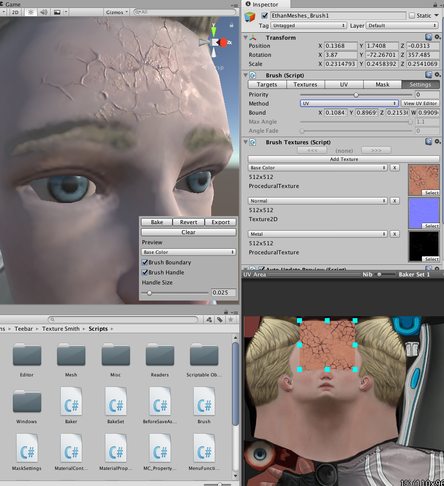

Projection Method
The projection method works the way a projector or directional light might, you point in the direction you want, adjust the size, and depth.
UV Method
Aside from the projection method, Brushes can be positioned by a uv boundary instead. Obviously this technique wont work as well near seams, but it's useful for more careful placement.
In the Brushes toolbar select Settings, set Method to uv. Click View UV Editor to bring up the editor.

Controls
- Mouse Wheel Click: Grab the workspace.
- Mouse Wheel Zoom: Zoom in and out.
- Left Click: Grab an edge nib or the full bounds.
- Mouse Move: Move the workspace or edge nib.
Some Brush settings will be disabled but most wont be.
Distance
Paints based on distance. This is experimental and under developed.